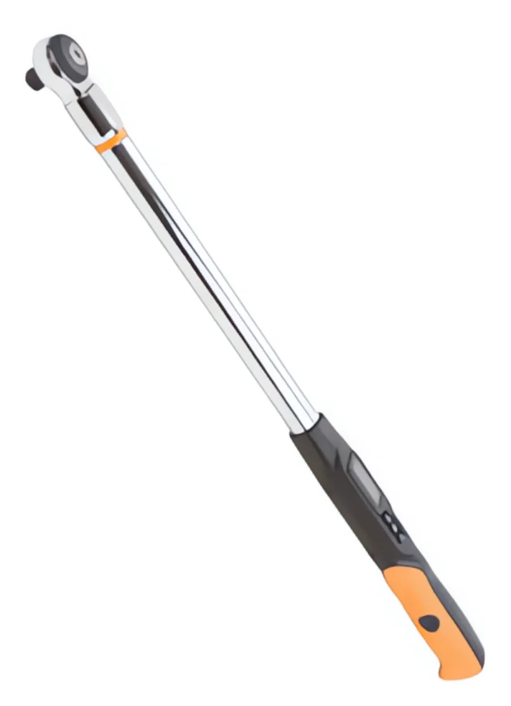

GROZ · Torque Tools
Torque Wrenches Digital
CAT NR HD/TQW/14-18/3-4 · ORD NR 38853
| CAT NR (catalogue number) | HD/TQW/14-18/3-4 |
|---|---|
| ORD NR (order number) | 38853 |
| Size (mm) | 14 x 18 |
| Drive (inch) | 3/4 |
| For use with | TQW/DI-AM/3-4/340, TQW/DI-M/3-4/340, TQW/DI/3-4/340 |
| Table section | SPARE HEAD ONLY |
Ask for a quote The catalogue PDF, page 172
“Ask for a quote” opens this product in the catalogue: add it to your quote and send it. Buyers from Africa, the Gulf and worldwide are welcome; prices in USD, EUR or INR.
From the GROZ Workshop Tools CB-05 catalogue. Not yet verified: these details were read from the printed catalogue automatically; check the catalogue page before ordering.